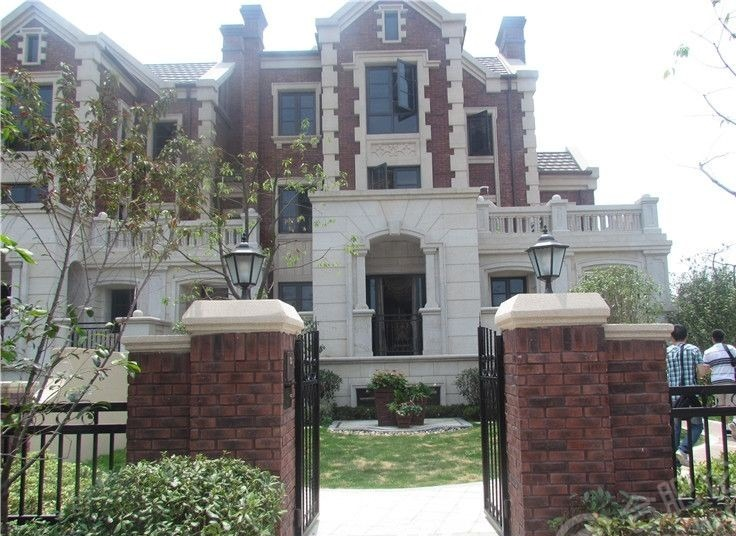
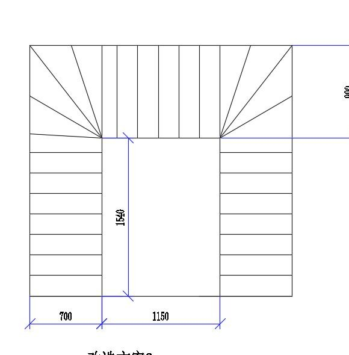
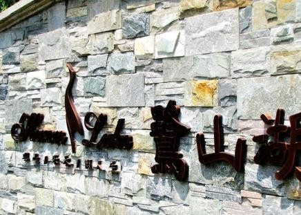
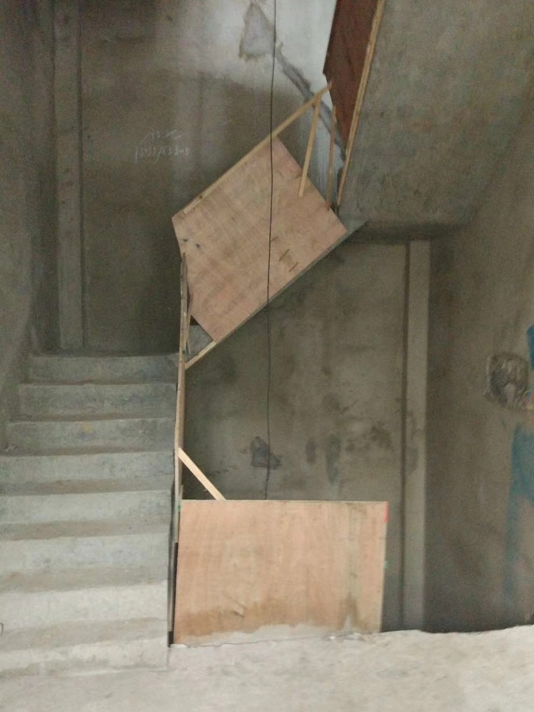
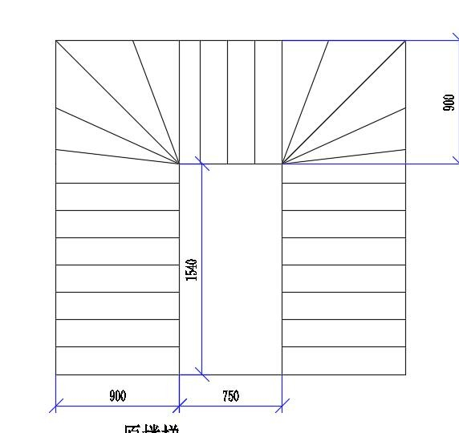
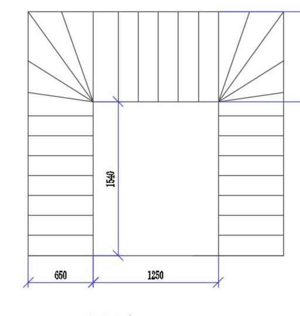

案例 / 合肥别墅电梯 / 井道改造
案例背景
项目位于合肥鹭山湖别墅区，属于别墅区内的小型电梯井道改造设计。
这类项目常见的问题不是“完全不能装”，而是原有井道和楼梯关系需要重新梳理。
现场条件
| 项目 | 记录 |
|---|---|
| 项目类型 | 别墅区小型井道改造 |
| 现场特征 | 既有楼梯与井道关系需要重新校对 |
| 判断重点 | 楼梯净宽、井道净尺寸、开门方向和结构固定点 |
从平面图和施工图能看出，楼梯通行、井道宽深、开门方向和结构固定点都要一起校对，不能只看一个洞口尺寸。
方案判断
方案判断围绕井道改造和家用别墅电梯适配展开，核心是把可施工条件和使用体验同时兼顾。
改造类项目尤其要注意：先判断结构怎么走，再判断设备怎么进，最后才是门型和装饰收口。
- 先看改造前井道和楼梯的关系。
- 先看结构固定点，再看设备怎么进场。
- 先确认开门位置是否会影响通行。
对业主的参考价值
对已经交房、但还没定井道做法的业主尤其有参考意义。
井道改造的关键，不是把洞口补大，而是让楼梯通行、受力和开门同时成立。
俞工点评
井道改造不是简单修修补补，而是要让结构、尺寸和设备三者能一起成立。顺序清楚了，很多小空间反而更好落地。
常见问题FAQ
井道改造和新建井道有什么区别？
新建井道可以从零确定尺寸，改造井道则要先适应既有楼梯和结构，判断顺序更重要。
井道改造最先该看什么？
先看楼梯净宽、井道净尺寸、底坑和顶层高度，再判断结构固定点和开门方向是否成立。
钢结构井道适合哪些改造项目？
适合原土建井道不够完整、墙体不便直接受力或需要灵活调整空间的别墅、自建房和改造项目。
为什么改造类案例更强调现场判断？
因为改造项目里，原结构、楼梯和电梯三者会互相制约，纸面尺寸不一定等于可施工尺寸。
图片记录







如果你家也是自建房、别墅或楼梯中间空间想加装家用电梯，建议先让俞工根据现场尺寸、井道条件、地坑和顶层高度做一次判断，再确定方案和预算。咨询电话：181-1967-0605。